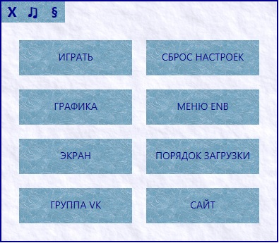
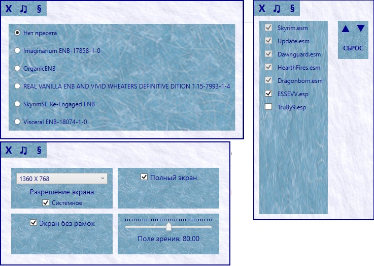

ESSE - VV (Elderscrollerr's Skyrim Special Edition — Vanilla Version)
Сборка модификаций, а точнее модифицированная игра, направленная на получения игры, близкой к оригиналу, но с множеством исправлений и оптимизацией — без графических и звуковых изменений, без изменений геймплея и без нового контента. Сборка представляет из себя набор файлов, схожий с набором оригинальной игры (это 5 мастер-файлов и набор bsa-архивов). Все изменения, вносимые модами, которые использовались при создании сборки встроены в эти файлы, архивы также перепакованы полностью. Для начала в сборке проведена очистка мастер-файлов как от «грязных правок», так и от всякого тестового и неиспользуемого «мусора», а также исправление ссылок на ресурсы, ошибок их отсутствия и т.д. Внедрено множество модов-исправлений, в том числе неофициальный патч, частично правки брони и оружия (WAFR, CCF) и т.д. Использованы оригинальные оптимизированные текстуры (без потери качетва). Полный список используемых модификаций будет представлен ниже. Все же графика и геймплей подверглись изменению, если считать исправления некорректных моделей и текстур, визуальных багов, а также характеристик и ключевых слов брони, оружия и др., которые не позволяли использовать полноценно и правильно перки, выводили предметы из баланса, заданного оригинальной игрой и т.п. Эти небольшие изменения являются скорее исправлениями, а не переделкой игры. Множество авторских правок, для совместимости различных встроенных модификаций, исправляющих неточности, найденные в процессе самой игры. В том числе переделанная система реализации некоторых перков (например «полный комплект») - введение новых ключевых слов, позволило получить более гибкие возможности дальнейшего моддинга, а в процессе их переделки исправлены неверные или же отсутствующие ключевые слова для работы перков. Также сборка содержит моды из Creation Club (по сути официальные мини-DLC) — новый «режим выживания», броня Рыцарей Девяти, Хризамер и другие. Сборка будет интересна тем, кто хочет получить оригинальную игру, но исправленную и оптимизированную без отхода от концепций геймплея, арт-дизайна, лора и сюжета. Для ESSE-VV онлайн-обновления делать не планируется. Данная сборка будет являться основой для второй сборки, расширяющей игру.
Для сборки разработана панель управления, расширяющая функционал стандартного лаунчера и добавляющая новые настройки и утилиты, в том числе онлайн-обновления. Обновления работают для текущей версии, с помощью онлайн-обновления нельзя перейти на следующую версию.
УСТАНОВКА
0. Установить последние Visual V++ Redistributable, DirectX, .NET Framework.
1. Распаковать сборку в любое место.
2. Запустить панель управления (папка Control Panel, файл ECPU.exe) и выполнить сброс настроек.
3. Можно запускать игру либо через панель управления, либо через skse64_loader.exe.
СОСТАВ СБОРКИ
В списке присутствуют моды, которые использовались при создании сборки.
Расширения движка
- ENBSeries v0.345 от Бориса Воронцова
- Skyrim Script Extender (SKSE) 2.0.7 от ianpatt, behippo, scruggsywuggsy the ferret, and purple lunchbox
- Achievements Mods Enabler 1.0.1.0 от xSHADOWMANx
- SSE Engine Fixes (skse64 plugin) 2.9.1.5.39 от aers
Моды
- SURVIVAL 1.0 от Bethesda Game Studios
- Divine Crusader от Bethesda Game Studios
- Plague of the Dead от Bethesda Game Studios
- Chrysamere от Bethesda Game Studios
- Ruins Edge от Bethesda Game Studios
- Staff of Sheogorath от Bethesda Game Studios
- Stendarrs Hammer от Bethesda Game Studios
- Arcane Archer от Bethesda Game Studios
- Arcane Accessories от Bethesda Game Studios
- Lord's Mail от Bethesda Game Studios
- Shadowrend от Bethesda Game Studios
- Nix-Hound от Bethesda Game Studios
- Tundra Homestead от Bethesda Game Studios
- Adventurer's Backpack от Bethesda Game Studios
- Camping от Bethesda Game Studios
- Dwarven Armored Mudcrab от Bethesda Game Studios
- ------------------------------------------------------------------------
- Unofficial Skyrim Special Edition Patch 4.1.3b от Unofficial Patch Project Team
- Unofficial Skyrim Survival Patch 2.9 от garthand
- Unofficial Creation Club Updates - All-In-One 1.2.0 от Joseph Russell
- Russian Localization - Fixes and Adds 1.05 от death7lord
- TruBy9 UltraWide - SkyrimSE 1.0.1 от ZaliaS
- Simply Optimized Textures for SSE 1.0 от Abendaron
- Indistinguishable Billboards for Skyrim SE 1.0 от PaleRiderx
- Weapons and Armor Fixes Remade 5.3 от kryptopyr
- Clothing and Clutter Fixes 2.0 от kryptopyr
- Unofficial Skyrim Modder's Patch - USMP 1.1 от The Community
- Unofficial Skyrim SE Fixes 0.4.1 от RX310
- Skyrim Project Optimization SE 1.2 от Pritster5/rgabriel15
- HearthFires Display Case Fix SE 1.0 от RealPuPpEt
- Flora Respawn Fix SE 2.1.3 от bluedanieru
- Aringoth Race Fix 1.0 от garthand
- Modern Brawl Bug Fix 1.04 от EnaiSiaion
- Dragon Stalking Fix 1.3 от sevencardz
- Hearthfire Grass Fix 1.0 от RogueFreeman
- Raven Rock - Fix Exit on Horseback 1 от AndrealphusVIII
- 1st Person Candlelight Fix 1.0.0 от Savaas
- WoodElf - MaleHair - Fix 1.2 от Provisioncore
- Broom Z axis size increase to 1.3 1.0 от nikoli
- Better Dialogue Controls 1.2 от ecirbaf
- Better MessageBox Controls 1.2 от ecirbaf
- Mythic Dawn Robe Fix FirstAndOnly от Ronnie Magnum
- College of Winterhold - FIX SNOW 2 от Master85
- Child neck seam fix от Beerezil
- AAAFyTy_DLC2_rrbulwarkintstr01_Collision_Fix 1.1 от FiftyTifty
- Dremora Fixed 1.0 от Rirgaril
- Call Of Valor Bug Fixes 1.0 от eyupwolf
- No Fall Damage Eorlund Gray-Mane 1.01 от Void123
- Don't Talk With Your Mouth Full 1.0 от Whitefang37
- Enchanting Price Bug Fix SSE 1.0 от Skepmanmods
- College Boots on Corpse 1.0 от thefinn
- DA14 A Night to Remember blackout fix 1 от mrjentipede
- Forsworn Armor male fix 1.0 от Beerezil
- No Annoying Mannequin Message 1.0.0 от o66xfuq7
- Helgen Keep Gap Fix and Added Torch 1.0 от morogoth35
- Mannequin AI Fix (Complements USLEEP) 1.0 от Telamont
- Physics Impact Damage Fix 1.1 от flexcreator
- NARC Remade - No Animals Report Crimes for Skyrim SE 1.01 от Pharros
- Bigger Pelagius' Hip Bone 1.1 от Gojirex
- DLC2 Deor and Fanari stuck scene fix 1.1 от dailyplanet
- Riften Mausoleum corner mesh collision fix 1 от unblest
- A fix for Staff of Magnus 1.0 от Reficule
- Hall of Attainment - Save Barrels 1.0 от Doronir
- USSEP Necromage fix 1.0.1 от KurodaAkira
- Glass Sword Seam Fix 1.0 от Nightscrawl
- Silverware normal map fix от dpillari
- Whiterun texture memory usage reduction 1.1 от DDVIL
- Your zombies won't turn to ash after a loading screen 1.0 Axonis
- Underforge Backdoor 1 от SingABrightSong
- Summoned Werewolves Attack Everything 1.0 от Ronolus
- Whiterun Warmaiden Shadow Fix 1 от zaty1
- Archmage Privacy 1.0 от mluppov
- Plant Yellow Mountain Flowers 1.0 от someshta
- Windhelm Snow Fix 3 от Wilserien
- Hearthfire Homes Dont Respawn 0.5 от Kallale
- Rock fixes for Skyrim 1.4.1 от Laacis2
- No stretching 2.2 от langley
- Blacksmith Forge Water Fix - Special Edition 1.0.4 от Eli Valenti
- Stonewall Fixes 1.0 от Dawnx2
- The Ruffled Feather - Mod Collection 4.2.2 от OpticShooter (Vanilla Females Booty Band-Aid)
- Snow Shader Fix 1.1 от JTT
- Like A Moss - Whiterun Moss Fix 1.0 от arronus
- Eye Normal Map Fix SSE 1SE от Mr.Dave
- Skyrim Performance PLUS 2 от Vergis
- Chicken Butthurt Minimizer AKA Immersive Eggs 1.0D от ShinGouki
- Culling data glitch fix 1.0 от Nico coiN
- Classic Start Menu - No Creation Club - No Mods Menu 1 от t65x
- Loadscreen Art Boy Model Fix 1.0 от Skybroom
- Unearthed Quest Ralis Sedarys Fix 0.1 от unblest
- Sigil Stone Fix 1.0 от Buttmann69
- Shadowcloak of Nocturnal Bug Fix 1.0 от esuriddick
- Elemental Fury Fix 2.0 от tesnexus8
- Charge Dialogue Fix 1.1 от Whitefang37
- No Sneak Screams 1.0 от Whitefang37
- Hunters Not Bandits 3.1 от raccoondance
- StendarrAuraFix от cheandr
- Bound Weapon Audio Fix 1.2 от CyberRumor
- Battle Cry Fix 1 от NTense
- Stop Afflicted Refugee Encounters 1.0 от oblivionated1
- Sound Hammering Sounds 1.0 от sialivi
- Drunk Sinking Head Idle Fix 1 от KnightRangersGuild
- Balanced Necromage Fix 1.0 от sevencardz
- Dragonborn Twin Souls Perk Fix Final от KahjiitRaj
- Return to Grace Fix 1.0 от Ritaku
- Dragonrend No Resist 1 от aaa
- Clothing Show Jewelry Fix 1.2 от softcatsocks
- Skyrim particle patch for ENB (SE) 03.02.2018 от mindflux
ПАНЕЛЬ УПРАВЛЕНИЯ
 
FAQ
В: Wrye Bash красным показывает отсутсвие файлов локализации.
О: Они запакованы, так и должно быть.
В: Фикс для ультра-широких мониторов?
О: Панель управления --> Порядок загрузки. Включить TruBy9.esp
В: Как отправить миллион долларов автору на поддержку сборки и в благодарность?
О: Номер карты: 67 61 9600 0090669822
Сбербанк (Россия)
В: Как поставить на сборку мод, требующий неоф. патча?
О: Воспользоваться утилитой Wrye Bash и в списке мастер-файлов у мода поменять Unofficial Skyrim Special Edition Patch.esp
на ESSEVV.esp.
Не переименовывайте ESSEVV.esp в Unofficial Skyrim Special Edition Patch.esp, иначе вам придется генерировать seq-файл
и переименовывать папки, зависящие от названия плагина.